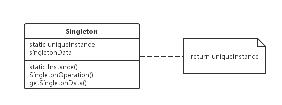

设计模式速谈：六、单例模式
在上一篇文章中文我们谈到了“创建型”设计模式中的“建造者模式”，如果用一句话来概括“建造者模式”的精髓，那就是“工头制定计划带着工人的灵感跟客户一起做工程”，这样是不是变得很好理解了呢？今天我们要谈到的仍然是“创建型”中的一种 — “单例模式”。
“单例模式”从字面上来理解，就是只有一个实例的意思，那么在什么情况下一个类只需要一个实例就够了呢？比如：系统中只能有一个窗口管理器、系统中只能有一个文件系统、一个数字滤波器只能有一个 A/D 转换器、一个会计系统只能专用于一个公司等等。其实在日常开发中，“单例模式”是用到的比较多的一种模式，使用场景也是比较普遍的。
那么，使用“单例模式”我们要确保哪些问题呢？答：我们要确保一个类只有一个实例并提供一个对它的全局访问指针。如果用正常语言来描述，就是对于一个使用“单例模式”的类，我们要保证该类只能提供一个实例，同时提供一个可以在全局范围内访问这个实例的接口。下面给出“单例模式”的UML类图：

上图中的 Singleton 类即为一个使用了“单例模式”的类，在它的内部有一个静态变量（uniqueInstance）在初始化时便指向了自身的一个实例，同时还要确保用户不可以通过该类的构造函数来自行创建新的类实例（设置为私有）。所有对该类的访问只能通过该类提供的接口（暴露出的变量或方法）进行访问。
值得一提的是，在 Java 的“单例模式”中常用的一共有五种形式：“懒汉”，“饿汉”，“双重校验锁”，“枚举”和“静态内部类”。他们都以其各自不同的方式解决了“单例模式”在多线程的情况下线程安全的问题。
1、懒汉：
符合 “Lazy Loading” 延迟加载的特性，即用户使用时才会生成相应的对象。
public class Singleton {
private static Singleton instance = null;
private Singleton (){}
// 保持线程同步；
public static synchronized Singleton getInstance() {
if (instance == null) {
instance = new Singleton();
}
return instance;
}
}
2、饿汉：
该方式初始时便生成对象。
public class Singleton {
private static Singleton instance = new Singleton();
private Singleton (){}
public static Singleton getInstance() {
return instance;
}
}
3、静态内部类：
该方式利用了一个静态内部类来完成对“单例”的延迟加载，只有当用户“显式”的调用 “getInstance” 方法时系统才会自动生成一个静态内部类并初始化类实例。
public class Singleton {
private static class SingletonHolder {
private static final Singleton INSTANCE = new Singleton();
}
private Singleton () {}
public static final Singleton getInstance() {
return SingletonHolder.INSTANCE;
}
}
4、枚举：
这种方式是《Effective Java》作者 “Josh Bloch” 所倡导的方式，它不仅能避免多线程同步问题，而且还能防止反序列化导致重新创建新的对象。在 Java1.5 之后推荐使用。我们在这里利用一个枚举类型的来作为“单例”的装载器。
public enum SingletonHelper {
INSTANCE;
private SingletonHelper() {}
public Singleton getInstacne() {
Singleton s = new Singleton();
return s;
}
}
5、双重校验锁：
该方式是上述“懒汉”的升级版。
public class Singleton {
private volatile static Singleton singleton;
private Singleton() {}
public static Singleton getSingleton() {
if (singleton == null) {
synchronized (Singleton.class) {
if (singleton == null) {
singleton = new Singleton();
}
}
}
return singleton;
}
}